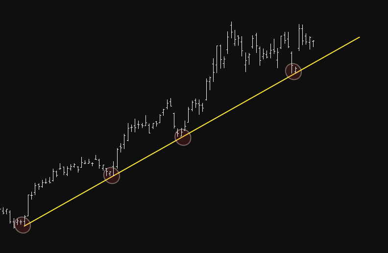
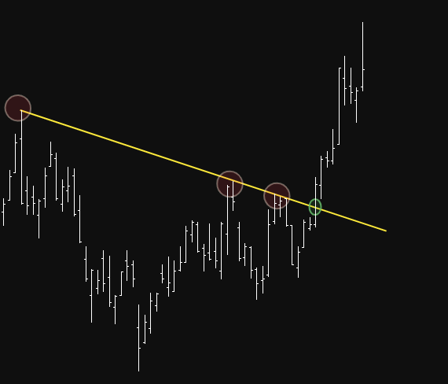

ניתוח טכני
ניתוח טכני
ניתוח טכני הוא שיטה לחיזוי תנועת מניות או מטבעות, תוך התבססות על גרפים של מחירי עבר. באמצעות גרפים מסוג נרות יפניים, הניתוח מתמקד בצורת הגרף, בקווי מגמה, באינדיקטורים טכניים ובנפח המסחר - מתוך ההנחה שהשוק פועל על פי דפוסים חוזרים שניתן לזהותם ולנצלם.
כללים עיקריים בניתוח טכני
- מגמה שורית (חיובית) - מתאפיינת בשיאים ושפלים עולים.
- מגמה דובית (שלילית) - מתאפיינת בשיאים ושפלים יורדים.
מגמות

תמיכה והתנגדות
- תמיכה - רמה שבה המחיר נוטה לעצור בירידות ולחזור לעלות.
- התנגדות - רמה שבה המחיר נוטה לעצור בעליות ולחזור לרדת.

בתמונה רואים קו תמיכה עולה — כל פעם שהמחיר נוגע בקו, הוא "מקפץ" למעלה. זה מראה שיש קונים שמונעים מהמחיר לרדת מתחת לרמה הזו, אם המניה שוברת מתחת לקו , יוצאים!

בתמונה רואים קו התנגדות יורד - כל פעם שהמחיר נוגע בקו הוא מתקשה לעבור אותו ויורד חזרה בנקודה המסומנת בירוק, המחיר פרץ את ההתנגדות כלפי מעלה, וזה סימן שיכול להעיד על שינוי מגמה
סוגי תבניות גרפיות בניתוח טכני
יש מלא תבניות גרפיות בקורס זה אציר 2
- ספל וידית (Cup and Handle)
- תבנית דגל (Flag Pattern)

.png)
לחץ על התמונה
שלב הספל - ירידה הדרגתית במחיר ולאחריה עלייה חזרה לרמה הקודמת, בצורת קערה עגולה (U).
שלב הידית - תנועה צידית או ירידה קלה שמתרחשת לאחר יצירת הספל, ונראית כמו תיקון זמני.
הפריצה - כשהמחיר פורץ כלפי מעלה מעל קו ההתנגדות של הידית, זו נקודת כניסה אפשרית.

.png)
לחץ על התמונה
שלב התורן - תנועה חדה ומהירה כלפי מעלה (או מטה) עם נפח גבוה.
שלב הדגל - תיקון קל או תנועה צידית בתוך תעלה צרה, לרוב בנפח מסחר נמוך יותר.
הפריצה - כשהמחיר פורץ מהדגל באותו כיוון של התורן, זו נקודת כניסה אפשרית.
סטופ לוס (מתי למכור)
פשוט מאוד מתחת לקו הפריצה של אותה תבנית, זה יכול להיות כמה סנדים בודדים וזה יכול להיות כמה דולרים זה תלוי כמה את/ה מוכן לסכן בשביל הטרייד הזה
שים לב שאם שמים שטופ ממש צמוד יכול להיות שהסטופ יקפוץ לך במהלך המסחר (תלוי בתנודתיות של המניה)